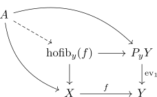

universal property of the homotopy fibre
Proposition
Let $f: X \rightarrow Y$ be a continuous map.
Then a map to the homotopy fibre $A \rightarrow \mathrm{hofib}_y(f)$ is given by a continuous maps
\begin{align*}
\iota: A \rightarrow& X
\end{align*}
with a nullhomotopy $A$ from the constant map with value $y$ to $f \circ \iota$
Proof
consider the pullback

where $P_yY$ is the pointed path space
Then by adjunction it follows that the homotopy
\begin{align*}
H: A \times [0,1] \rightarrow Y
\end{align*}
from the constand map to $f \circ \iota$ corresponds to map
\begin{align*}
A \rightarrow \mathrm{Map}([0,1], Y)
\end{align*}
(see: mapping space product adjunction for topological spaces)
As the homotopy is a nullhomotopy to the constant point, this restricts to
\begin{align*}
A \rightarrow P_yY
\end{align*}
Thus we get an induced map
